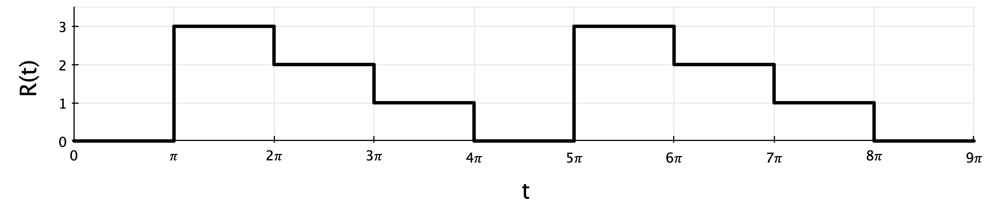

---
redirect_from:
  - "/quizzes/quiz2-ivps"
title: |-
  Sample Quiz 2 problems: IVPs
pagenum: 13
prev_page:
  url: /second-order/power-series.html
next_page:
  url: /contributing.html
suffix: .md
search: t delta x frac y yi begin end align pi left right equation prime u z e order solution method n dt ui euler c error b stable int ode f given step global backward bmatrix cos sigma problem midpoint unstable errors expect recursion formulas system r omega yh lambda k stability using conditionally should size second function local solve forward need rightarrow sin ih analysis dy show sizes based unconditionally d accuracy ti values accurate solving clearly define any difference where dx g form used option while fourier series input waveform wave neither coefficients not bn sum infty intt

comment: "***PROGRAMMATICALLY GENERATED, DO NOT EDIT. SEE ORIGINAL FILES IN /content***"
---

    <main class="jupyter-page">
    <div id="page-info"><div id="page-title">Sample Quiz 2 problems: IVPs</div>
</div>
    <div class="jb_cell">

<div class="cell border-box-sizing text_cell rendered"><div class="inner_cell">
<div class="text_cell_render border-box-sizing rendered_html">
<h2 id="Problem-1:-Stability-analysis">Problem 1: Stability analysis<a class="anchor-link" href="#Problem-1:-Stability-analysis"> </a></h2><p>Given the first-order ODE
\begin{equation}
\frac{dy}{dt} = -8y \;,
\end{equation}</p>
<p>a.) Perform a linear stability analysis to find the amplification factor ($\sigma$) for the <strong>midpoint method</strong> (also known as the modified Euler method) applied to this ODE.</p>
<p>b.) Using your result from part (a), show whether the numerical solution would be stable or unstable for time-step sizes of $\Delta t = 0.2$ and $\Delta t = 0.4$. (Show for each value)</p>
<p>c.) Based on your results for parts (a) and (b), is the midpoint method unstable, conditionally stable, or unconditionally stable for this ODE?</p>
<p>d.) What is the order of accuracy for the midpoint method? Based on this, what (approximate) global errors would you expect in the solution when using time-step sizes of $\Delta t = 0.2$ and 0.4?</p>
<p>e.) What are your two options for reducing error in the solution?</p>
<h3 id="Solution">Solution<a class="anchor-link" href="#Solution"> </a></h3><p>a.)
\begin{align}
y_{i+1/2} &amp;= y_i + \frac{\Delta t}{2} \, f(t_i, y_i) \\
y_{i+1} &amp;= y_i + \Delta t \, f(t_i + \frac{\Delta t}{2}, y_{i+1/2})
\end{align}</p>
<p>For this ODE:
\begin{align}
y_{i+1/2} &amp;= y_i + \frac{\Delta t}{2} \, (-8 y_i) = y_i - 4 \Delta t \, y_i \\
y_{i+1} &amp;= y_i + \Delta t \, \left[ -8 \left( y_i - 4 \Delta t \, y_i \right) \right] \\
&amp;= y_i - 8 \Delta t \, y_i + 32 \Delta t^2 \, y_i \\
&amp;= y_i (1 - 8 \Delta t + 32 \Delta t^2)
\end{align}
So, 
\begin{equation}
\sigma = \frac{y_{i+1}}{y_i} = 1 - 8 \Delta t + 32 \Delta t^2
\end{equation}</p>
<p>b.) For stability, $|\sigma| \leq 1$.</p>
<p>$\Delta t = 0.2$:
\begin{equation}
\sigma = 1 - 8(0.2) + 32 (0.2)^2 = 0.68
\end{equation}
so <strong>stable</strong>.</p>
<p>$\Delta t = 0.4$:
\begin{equation}
\sigma = 1 - 8(0.4) + 32 (0.4)^2 = 2.92
\end{equation}
so <strong>unstable</strong>.</p>
<p>c.) Conditionally stable; the method is stable for some values of $\Delta t$ and unstable for other values.</p>
<p>d.) The midpoint method is 2nd-order accurate. So, for $\Delta t = 0.2$, we should expect global errors on the order of 0.04, and for $\Delta t = 0.4$ we should expect errors on the order of 0.16.</p>
<p>e.)</p>
<ul>
<li>reduce the step size</li>
<li>choose a higher order method, such as 4th-order Runge-Kutta</li>
</ul>
<h2 id="Problem-2:-Second-order-Backward-Euler">Problem 2: Second-order Backward Euler<a class="anchor-link" href="#Problem-2:-Second-order-Backward-Euler"> </a></h2><p>Given the second-order ODE
\begin{equation}
2 y^{\prime\prime} + y^{\prime} + 4y = 3x
\end{equation}</p>
<p>a.) Find the recursion formulas (i.e., $y_{i+1} = \ldots$) for numerically solving this ODE using the backward Euler method. Clearly define/state any variable or function you use.</p>
<p>b.) What is the order of accuracy for the backward Euler method? Given a step size $\Delta x = 0.15$, approximately what local error and what global error would you expect in your solution? What is the difference between these two errors?</p>
<p>c.) Why would you want to use this method to solve an ODE over a simpler method like forward Euler?</p>
<h3 id="Solution">Solution<a class="anchor-link" href="#Solution"> </a></h3><p>a.) System of Backward Euler recursion formulas, for $y(x)$ and $u(x) = y^{\prime}$, where $f(x,y,u) = dy/dx$ and $g(x,y,u) = du/dx = y^{\prime\prime}$:
\begin{align}
y_{i+1} &amp;= y_i + \Delta x \, f(x_{i+1}, y_{i+1}, u_{i+1}) = y_i + \Delta x \, u_{i+1} \\
u_{i+1} &amp;= u_i + \Delta x \, g(x_{i+1}, y_{i+1}, u_{i+1}) = u_i + \Delta x \, \left( \frac{3}{2}x_{i+1} - \frac{1}{2} u_{i+1} - 2 y_{i+1} \right)
\end{align}
This form is implicit and cannot be used directly, so we need to solve the system of equations.</p>
<p><em>There are two ways to approach this, that give an equivalent solution</em></p>
<p><strong>Option 1:</strong> Use substitution and elimination to solve:
\begin{align}
u_{i+1} &amp;= u_i + \frac{3}{2} \Delta x \, x_{i+1} - \frac{1}{2} \Delta x \, u_{i+1} - 2 \left( y_i + \Delta x \, u_{i+1} \right) \\
&amp;= u_i + \frac{3}{2} \Delta x \, x_{i+1} - \frac{1}{2} \Delta x \, u_{i+1} - 2 y_i - 2 \Delta x \, u_{i+1} \\
u_{i+1} \left( 1 + 2 \Delta x^2 + \frac{1}{2} \Delta x \right) &amp;= u_i + \frac{3}{2} \Delta x \, x_{i+1} - 2 \Delta x \, y_i
\end{align}
Thus,
\begin{align}
u_{i+1} &amp;= \frac{u_i + \frac{3}{2} \Delta x \, x_{i+1} - 2 \Delta x \, y_i}{1 + 2 \Delta x^2 + \frac{1}{2} \Delta x} \\
y_{i+1} &amp;= y_i + \Delta x \frac{u_i + \frac{3}{2} \Delta x \, x_{i+1} - 2 \Delta x \, y_i}{1 + 2 \Delta x^2 + \frac{1}{2} \Delta x}
\end{align}</p>
<p><strong>Option 2:</strong> Or, use Cramer's rule:
\begin{align}
y_{i+1} - \Delta x u_{i+1} &amp;= y_i \\
2 \Delta x \, y_{i+1} + \left( 1 + \frac{1}{2} \Delta x \right) u_{i+1} &amp;= u_i + \frac{3}{2} \Delta x \, x_{i+1} \\
\rightarrow \begin{bmatrix} 1 &amp; -\Delta x \\ 2 \Delta x &amp; \left( 1 + \frac{1}{2} \Delta x \right)\end{bmatrix} \begin{bmatrix} y_{i+1} \\ u_{i+1} \end{bmatrix} &amp;= 
\begin{bmatrix} y_i \\ u_i + \frac{3}{2} \Delta x \, x_{i+1} \end{bmatrix}
\end{align}
Then,
\begin{align}
y_{i+1} &amp;= \frac{y_i \left(1 + \frac{\Delta x}{2} \right) + \Delta x \left( u_i + \frac{3}{2} \Delta x \, x_{i+1} \right)}{1 + \frac{\Delta x}{2} + 2 \Delta x^2} \\
u_{i+1} &amp;= \frac{u_i + \frac{3}{2} \Delta x \, x_{i+1} - 2 \Delta x \, y_i}{1 + \frac{\Delta x}{2} + 2 \Delta x^2}
\end{align}</p>
<p>b.) Backward Euler is 1st-order accurate, so the global error is on the order of the step size ($\Delta x$).</p>
<p>The global error should then be on the order of 0.15, and the local error on the order of $0.15^2 = 0.0225$.</p>
<p>The difference: the local (or truncation) error is the error at each step of the solution, while the global error is the overall error that accumulates over the whole solution.</p>
<p>c.) Backward Euler is unconditionally stable, while Forward Euler is conditionally stable.</p>
<h2 id="Problem-3:-Fourier-series">Problem 3: Fourier series<a class="anchor-link" href="#Problem-3:-Fourier-series"> </a></h2><p>Given the input waveform $R(t)$ shown here,</p>
<p></p>
<p>a.) What is the period and fundamental frequency of the input forcing function?</p>
<p>b.) Is the periodic function $R(t)$ odd, even, or neither?</p>
<p>c.) Find the coefficients $a_0$ and $a_n$ of the Fourier series representation of $R(t)$. (For purposes of time, you do not need to find $b_n$):
\begin{equation}
R(t) = a_0 + \sum_{n=1}^{\infty} a_n \cos(n \omega t) + \sum_{n=1}^{\infty} b_n \sin(n \omega t) 
\end{equation}</p>
<h3 id="Solution">Solution<a class="anchor-link" href="#Solution"> </a></h3><p>a.)
\begin{equation}
T = 4\pi \quad \omega = \frac{2\pi}{T} = \frac{1}{2}
\end{equation}</p>
<p>b.) Neither.</p>
<p>c.)
\begin{align}
a_0 &amp;= \frac{1}{T} \int_0^T f(t) dt = \frac{1}{4\pi} \left[ \int_0^{\pi} 0 dt + \int_{\pi}^{2\pi} 3 dt + \int_{2\pi}^{3\pi} 2 dt + \int_{3\pi}^{4\pi} 1 dt  \right] \\
&amp;= \frac{1}{4\pi} \left[ 3 \pi + 2 \pi + 1 \pi \right] \\
a_0 &amp;= \frac{3}{2}
\end{align}</p>
\begin{align}
a_n &amp;= \frac{2}{T} \int_0^T f(t) \cos(n \omega t) dt \\
&amp;= \frac{2}{4\pi} \left[ \int_0^{\pi} 0 \cos \left(\frac{n t}{2}\right) dt + \int_{\pi}^{2\pi} 3 \cos \left(\frac{n t}{2}\right) dt + \int_{2\pi}^{3\pi} 2 \cos \left(\frac{n t}{2}\right) dt + \int_{3\pi}^{4\pi} 1 \cos \left(\frac{n t}{2}\right) dt  \right] \\
&amp;\cdots \\
a_n &amp;= \frac{1}{n\pi} \left[ \sin\left(\frac{3 n \pi}{2}\right) - 3 \sin\left(\frac{n \pi}{2}\right) \right]
\end{align}<h2 id="Problem-4:-Second-order-analytical">Problem 4: Second-order analytical<a class="anchor-link" href="#Problem-4:-Second-order-analytical"> </a></h2><p>The displacement $y(t)$ of a harmonically forced mass-spring system is given by:
\begin{equation}
y^{\prime\prime} + 8y^{\prime} + 16y = 6 e^{-4t}
\end{equation}</p>
<p>a.) For initial conditions $y(0)=0$ and $y^{\prime}(0) = 2$, find the response of the system $y(t)$.</p>
<p>b.) Given a specified time increment $\Delta t$ and a domain, write the recursion formulas for solving this equation with the forward Euler method. Clearly define any variables or functions used. You do not need to write Matlab code.</p>
<h3 id="Solution">Solution<a class="anchor-link" href="#Solution"> </a></h3><p>a.) First, get the homogeneous solution:
\begin{align}
y_H^{\prime\prime} + 8y_H^{\prime} + 16y_H &amp;= 0 \\
\rightarrow \lambda^2 + 8 \lambda + 16 &amp;= 0 = (\lambda + 4)^2 \\
\lambda &amp;= 4 \text{ (repeated)} \\
\text{so } y_H &amp;= c_1 e^{-4t} + c_2 t e^{-4t}
\end{align}</p>
<p>Next, use the method of undetermined coefficients to get the inhomogeneous solution:
\begin{align}
y_{IH} &amp;= K t^2 e^{-4t} \\
y_{IH}^{\prime} &amp;= K e^{-4t} \left( 2t - 4t^2 \right) \\
y_{IH}^{\prime\prime} &amp;= K e^{-4t} \left( -8t + 2 - 8t + 16t^2 \right) \\
\rightarrow K &amp;= 3 
\end{align}</p>
<p>Then, the general solution is
\begin{equation}
y(t) = c_1 e^{-4t} + c_2 t e^{-4t} + 3 t^2 e^{-4t}
\end{equation}</p>
<p>Applying the initial conditions:
\begin{equation}
y(t) = 2 t e^{-4t} + 3 t^2 e^{-4t}
\end{equation}</p>
<p>b.) If $z_1 = y$ and $z_2 = y^{\prime}$, then
\begin{align}
z_1^{\prime} &amp;= z_2 \\
z_2^{\prime} &amp;= y^{\prime\prime} = 6e^{-4t} - 8z_2 - 16z_1 = f(t, z_1, z_2)
\end{align}</p>
<p>Then, the recursion formulas are:
\begin{align}
z_{1, i+1} &amp;= z_{1,i} + \Delta t \, z_{2,i} \\
z_{2, i+1} &amp;= z_{2, i} + \Delta t \left( 6 e^{-4t} - 8 z_{2,i} - 16 z_{1,i} \right)
\end{align}
where $z_{1,1} = 0$ and $z_{2,1} = 4$.</p>

</div>
</div>
</div>
</div>

 


    </main>
    